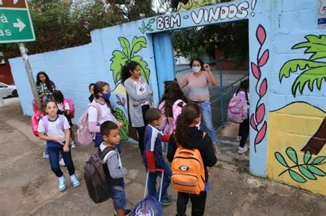

Movimento intenso marca entraada de alunos em escola do bairro.
a chegada de alunos movimentou a porta da escol, onde crianças entravam animadas pelo portão colorido.
Com mochilas e muita energia a cena marcou inicio de um dia letivo no bairro.
Para acompanhar seu filho: Clique aqui